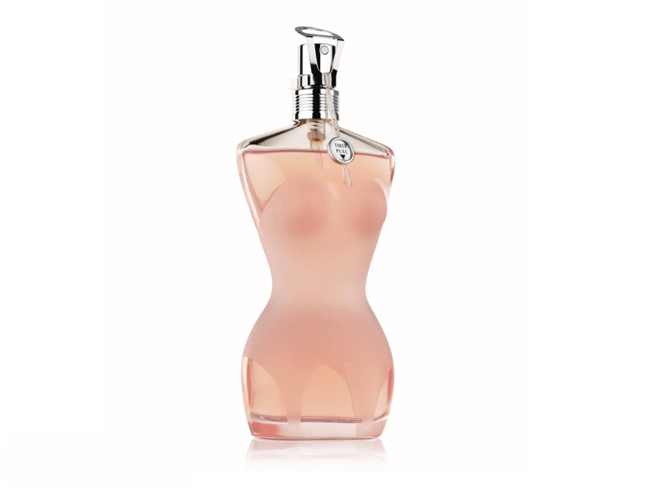
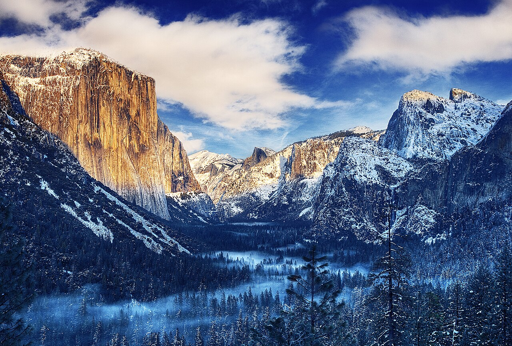
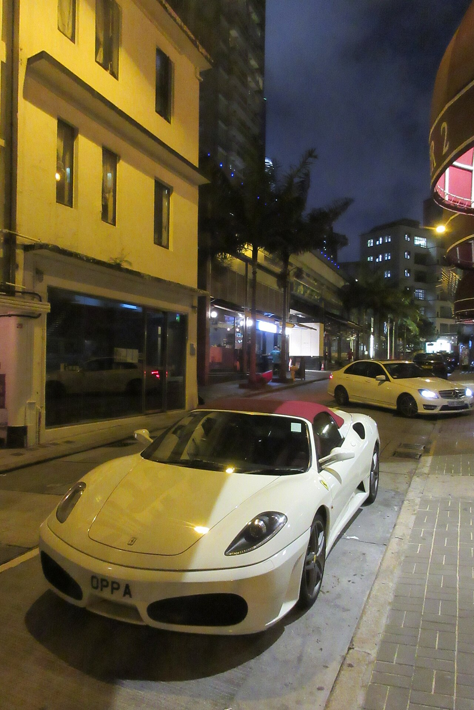
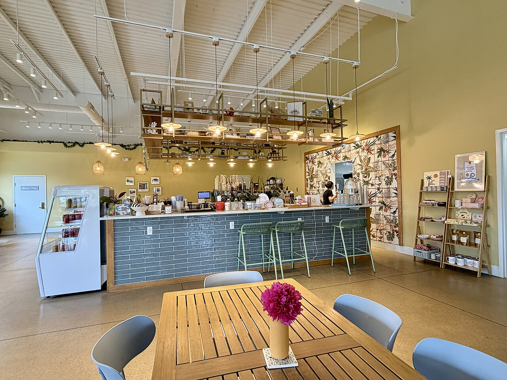

source (Commons)
No picture was attached in any arm. Left: the real source. Middle: from the short generic prompt. Right: from a 150–220 word VLM description of the source. The MCP chose the model each time. Scores are a VLM's rating of the result against the source (0–100 usable as a stand-in). Click any image to zoom.


Luxury perfume bottle, photorealistic high-end studio product photography. A single elegant heavy crystal glass perfume bottle filled with pale amber perfume, sculptural polished gold cap, minimal ivory label with no readable text. Centered hero composition on a warm ivory seamless studio background, subtle reflective stone surface, beautifully controlled softbox lighting, crisp glass edges, realistic refraction, delicate golden highlights, soft grounding shadow, premium editorial fragrance campaign aesthetic, meticulous detail, no extra bottles, no props, square composition.

Square, high-key studio product photograph of a single peach-pink perfume bottle shaped like a headless female torso, centered against a seamless pure white background. The bottle occupies approximately one-quarter of the frame’s width and five-sixths of its height, with generous empty space on both sides. Show the entire bottle straight-on at mid-bottle camera height, with a slight view of the top surfaces. Its clear glass outline forms sloping shoulders, a rounded bust, a deeply narrowed waist, broad curved hips, and a thick, flat rectangular base with rounded corners. Frosted blush-pink glass across the front suggests a fitted strapless bodice, while transparent outer edges and lower panels reveal pale salmon liquid and glossy glass thickness. A slender internal spray tube descends from the neck. Above the shoulders is a ribbed chrome collar and exposed polished silver atomizer, with black reflections, a small circular nozzle, and an elongated oval metal loop tilted toward the upper left. A small silver-edged white oval tag hangs at the right shoulder on a thin pale cord, reading “TIREZ” above “PULL” in tiny black uppercase letters, with a downward-pointing mark below. Broad, soft frontal and upper-left lighting creates white highlights along the glass edges. A faint peach reflection sits directly beneath the base on the glossy white surface.


A beautiful vintage American national park travel poster, vertical 9:16 composition, 1930s WPA screenprint aesthetic. Monumental rust-red sandstone cliffs and mesas in a southwestern national park, winding turquoise river through the canyon, sagebrush and dark evergreen silhouettes framing the foreground, distant mountains beneath a warm cream sky and a golden sun. Bold simplified geometric shapes, limited palette of burnt orange, deep teal, ochre and aged ivory, subtle lithographic ink grain and weathered paper texture, crisp elegant composition, nostalgic adventurous mood. Integrated tasteful vintage block lettering at top reads 'EXPLORE' and at bottom 'NATIONAL PARKS'. Full poster artwork with narrow ivory border, no mockup, no watermark.

Vertical vintage screen-printed travel poster, straight-on, filling the frame within a narrow charcoal surround. An aged ivory paper border has stained corners, tiny dark pinholes, scuffs, and uneven edges. The upper four-fifths shows a canyon from a high overlook, looking slightly downward. Layered flat-topped mesas recede toward a high horizon; a broad distant butte sits above center. Huge stepped cliffs fill both foreground sides, enclosing a deep, zigzagging central gorge. A thin pale sage river winds upward from the lower left-center into shadow. Jagged rock faces have angular cracks, narrow vertical orange edges, and scattered cream patches across dusty salmon ledges. Flat inks: peach pink, pale yellow-green, muted sage, gray lavender, burnt orange, and near-black navy. Pale sky with broad salmon clouds and thin horizontal streaks. Upper-left illumination leaves deep navy shadows on right-facing cliffs; no gradients. Rough ink registration, grainy paper, simplified hard-edged shapes. A salmon bottom panel carries centered dark navy uppercase lettering: small spaced “A FREE GOVERNMENT SERVICE” above large wide “GRAND CANYON”; below, “NATIONAL” at left and “PARK” at right. Bottom-left reads “U.S. DEPARTMENT” then “OF THE INTERIOR”; bottom-right reads “NATIONAL PARK” then “SERVICE”. Between them sits a navy circular seal containing a bison silhouette, pale mountain lines, and a dotted inner rim. Lettering is bold, geometric, slightly irregular.


Yosemite Valley at sunrise, sweeping panoramic landscape photograph from Tunnel View, El Capitan and Half Dome rising above the valley, soft golden sunlight illuminating granite peaks, delicate morning mist drifting among pine forests, pale peach and pink sky, natural colors, realistic detail, serene atmosphere, no text.

Wide landscape photograph, approximately 3:2, viewed from an elevated overlook straight into a deep, snow-covered mountain valley. A massive, sheer granite cliff fills the upper-left third, its flat vertical face glowing golden orange, with long dark cracks, rusty streaks, and snow along its rounded summit and pale gray base. A shadowed triangular mountainside descends diagonally from the left edge toward the lower center. Across the right half, steep blue-gray granite walls rise into irregular snowy peaks, with a broad rounded summit near the upper right and a smaller squared pinnacle beside it. Lower, sunlit cream-colored ridges close the distant central valley. Dense dark evergreen forest covers the valley floor and lower slopes, every tree lightly edged with snow. Thin luminous cyan mist forms horizontal ribbons and pools among the trees, strongest across the bottom left and central distance. Several nearby conifers overlap the lower edge; a tall sparse trunk stands right of center, and fuller snowy branches crowd the bottom right. The upper third contains deep cobalt sky and broad, soft white clouds tinted pale peach. Low sunlight from the left creates warm cliff highlights against deep navy shadows. Crisp rock textures, fine tree detail, strongly saturated colors, high contrast, expansive landscape photography. No lettering.


Photorealistic cinematic photograph of a sleek sports car on a city street at night, vertical composition. Low three-quarter front view, glossy metallic charcoal body, dramatic headlights, wet asphalt reflecting vibrant neon signs and city lights, towering buildings in the background, atmospheric nighttime lighting, sharp detailed car, premium automotive photography. No text, no watermark.

Vertical 2:3 nighttime street photograph, slightly grainy, wide-angle, shot from standing height, looking diagonally down a narrow street. A glossy ivory-white convertible fills the lower two-thirds, its rounded nose near the bottom-left and burgundy-red fabric roof toward center-right. Show the front and right flank: elongated clear headlights with dark circular lenses, two large black oval bumper intakes, a small yellow hood badge, black windshield, white mirrors, sculpted side intake, silver wheels, and low-profile black tires. The front plate reads “OPPA” in spaced black capitals. Yellow streetlight reflections streak across the curved hood; the headlights are off. A gray rectangular-paver sidewalk runs along the right edge beside a raised curb and road drain. Behind the convertible, a white sedan faces the camera at an angle, bright bluish headlights on. Dark parked cars recede beyond it. The left half contains a tall mustard-yellow plaster building with narrow dark windows, projecting horizontal ledges, pipes, and a black glass storefront reflecting vehicles. Palm trunks line illuminated shopfronts beneath a long gray facade; tiny people stand near the central entrance. Dark high-rises rise behind palm fronds into a deep blue-gray sky. At upper-right, a cropped curved facade has dark bands, pink-lit windows, and a bright amber streetlamp. Mixed harsh amber and cool white lighting creates deep shadows.


A cosy independent coffee shop interior, welcoming and intimate, warm amber pendant lights, rich wood tables and mismatched vintage chairs, artisanal espresso bar, chalkboard menu, shelves of ceramic cups, leafy houseplants, soft daylight through large street-facing windows, a few books and a steaming coffee on a foreground table. Thoughtfully layered natural textures, inviting lived-in character, realistic interior photography, wide-angle composition, warm natural colours, no people, no prominent text.

Wide-angle interior photograph of a café, viewed from seated eye height, angled slightly upward. A honey-brown slatted wooden table fills the lower foreground, cropped along bottom and right, surrounded by four partially visible pale blue-gray molded chairs. A slender mustard-yellow vase holds a dense magenta flower on a square patterned coaster near the table’s center-right. Across the middle stands a long counter faced with glossy muted teal rectangular tiles, white grout, pale countertop, and wooden edging. Three tall sage-green wire stools line its right half. At left, a white refrigerated display case has a sloping glass front and shelves of colorful drinks. Cups, jars, coffee equipment, stacked paper cups, and a small blue-lit screen crowd the countertop; a dark-haired worker stands behind its right end. An open black metal overhead rack carries dishes and plants. Amber pendant bulbs hang on long black cords, with smaller woven basket shades farther back. The high white corrugated ceiling exposes beams, ducts, cables, and track lights. Warm olive-yellow walls surround a pale blue door at left and a large botanical-patterned opening at right, bordered in wood. Two leaning wooden merchandise shelves occupy the right wall. Tiny signs remain unreadable. Tan polished concrete flooring, soft daylight from the right, warm pendant pools, natural colors, deep focus, slight wide-angle distortion.